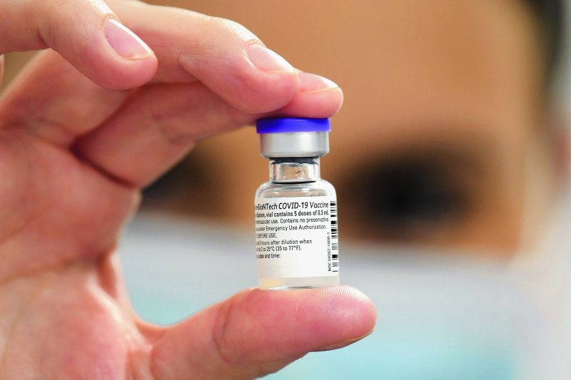
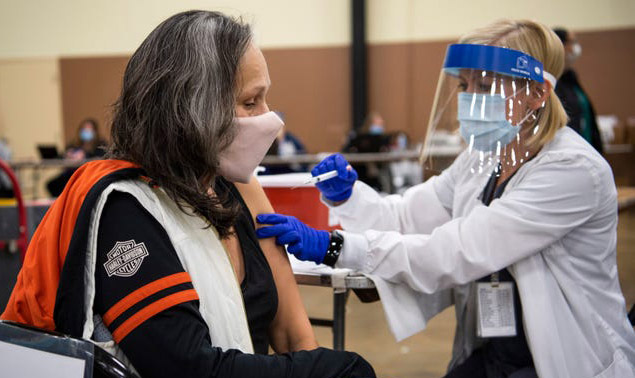

Trong bài trả lời phỏng vấn trên Đài truyền thanh RAC1 của Tây Ban Nha liên quan đến chủ đề khi nào đại dịch COVID-19 chấm dứt, Tiến sĩ Maria Neira nêu quan điểm rằng: "Hai năm là khoảng thời gian mà chúng ta đặt ra để kiểm soát dịch bệnh và chắc chắn đó là lượng định thời gian phù hợp. Nếu chúng ta bắt tay tiêm chủng với tốc độ như đã làm được cho đến nay, thế giới sẽ tìm ra được con đường thoát khỏi tình cảnh khó khăn này, thậm chí có thể sớm hơn".
Tuy nhiên, quan chức của LHQ cũng cho rằng việc thiếu hụt vaccine và sinh phẩm ở nhiều nước là điều đáng lo ngại, từ đó nhấn mạnh yêu cầu thế giới cần phải hành động cùng nhau để ra khỏi đại dịch. Lời kêu gọi này cũng phù hợp với tuyên bố trước đó của Tổng Giám đốc WHO Tedros Adhanom Ghebreyesus. Người đứng đầu WHO nhấn mạnh bất bình đẳng về phân phối vaccine toàn cầu là nỗi đau đối với "lương tâm tập thể". Ông cho rằng, vấn đề hiện tại không phải là tìm đưa thế giới trở lại trạng thái bình thường, mà còn là đúc rút ra những bài học từ khủng hoảng COVID-19 để có sự chuẩn bị tốt hơn trong tương lai. Trong khi đó, giới chuyên gia nhận định, đại dịch COVID-19 sẽ không thể kết thúc trong 6 tháng tới, mà cần nhiều thời gian hơn, dù rằng nhiều quốc gia đã nhanh chóng triển khai và thu được hiệu quả với chương trình tiêm vaccine. Các chuyên gia về cơ bản đều đồng thuận rằng, dịch bệnh sẽ được chế ngự, kiểm soát khi có khoảng 90-95% dân số toàn cầu đạt miễn dịch - có thể thông qua tiêm chủng hay đã từng nhiễm SARS-CoV-2 trước đó. Chìa khóa then chốt vẫn phải là tiêm chủng, bởi "nếu không có tiêm chủng, con người dễ bị tổn thương, bởi virus sẽ lây lan rộng và tấn công ngay trong mùa thu và mùa đông này", bà Lone Simonsen, chuyên gia dịch tễ và là giáo sư chuyên ngành khoa học sức khỏe dân số tại Đại học Roskilde (Đan Mạch) nói. Vị chuyên gia này chỉ ra rằng, việc nghiên cứu 5 đại dịch cúm được ghi nhận trên thế giới trong 130 năm qua có thể giúp đưa ra dự báo về xu hướng phát triển của COVID-19.
Chia sẻ quan điểm này, Giám đốc Trung tâm Nghiên cứu Chính sách và Bệnh truyền nhiễm tại Đại học Minnesota (Mỹ) Michael Osterholm nhận định: "Tôi cho rằng lây nhiễm đang diễn ra trên thế giới. Rồi xu hướng sẽ lắng dịu. Nhưng tiếp đó tôi nghĩ rằng, chúng ta rất dễ phải chứng kiến bùng phát mới vào mùa thu và mùa đông này".Khi hàng tỉ người trên thế giới chưa được tiếp cận vaccine và ít có cơ hội để loại trừ virus, thế giới trong vài tháng tới có thể sẽ phải đối diện với các ổ dịch trong lớp học, trên các phương tiện công cộng và nơi làm việc, khi các nước quyết tâm đẩy nhanh tiến độ mở cửa nền kinh tế. Ngay cả khi tỉ lệ tiêm chủng tăng nhanh, vẫn sẽ nhóm người thuộc diện dễ bị tổn thương trước virus. Đó là trẻ sơ sinh, người không thể tiêm vaccine hoặc không muốn tiêm vaccine, người đã tiêm nhưng lại rơi vào nhiễm đột phá do suy giảm lớp bảo vệ. Vài tháng tới sẽ là khoảng thời gian khó khăn. Một vài năm tới sẽ là chu kỳ lên xuống của dịch bệnh gắn với thời gian cần thiết để tăng độ che phủ toàn diện của vaccine. Thách thức nằm ở chỗ dịch sẽ ở các mức đỉnh và đáy nào, quãng thời gian tạo đỉnh, rồi đáy và ngược lại sẽ dài bao lâu. "Chúng ta không biết, nhưng tôi có thể nói rằng, lây nhiễm virus kiểu cháy rừng sẽ không ngừng lại chừng nào virus vẫn còn tìm thấy đối tượng phù hợp để tấn công và gây cháy", ông Michael Osterholm nhận định. Hay nói như Phó Giáo sư về lịch sử y học thuộc Đại học Oxford Erica Charters thì đại dịch COVID-19 sẽ chấm dứt ở từng nơi vào những thời điểm khác nhau - như những gì đã diễn ra trong quá khứ. Chính phủ các nước sẽ phải đưa ra quyết định sẵn sàng sống chung được với dịch bệnh ở cấp độ nào. Cách tiếp cận cũng khác nhau. Dù một số vẫn theo đuổi chiến lược "không COVID-19", nhưng thế giới gần như chắc chắn sẽ không thể loại bỏ hoàn toàn được virus. Vị chuyên gia này nói: "Tiến trình chấm dứt dịch bệnh sẽ không đồng nhất. Đại dịch là hiện tượng sinh học, nhưng cũng là hiện tượng chính trị và xã hội. Ngay ở thời điểm hiện tại thế giới vẫn có những cách tiếp cận khác nhau khi đối diện với COVID-19". Trên thực tế, hơn 5,66 tỷ liều vaccine đã được sử dụng trên khắp thế giới, song thành công của chương trình tiêm chủng này không đồng đều giữa các khu vực. Nếu tỷ lệ tiêm chủng đạt khá cao tại một số khu vực, trong đó có Liên minh châu Âu (EU), Bắc Mỹ và Trung Quốc, thì ở hầu hết quốc gia châu Phi, mới chỉ có gần 5% dân số được tiêm đủ hai mũi vaccine. Ấn Độ - quốc gia đông dân thứ hai trên thế giới cũng mới chỉ tiêm đủ hai mũi vaccine cho khoảng 26% dân số. Đây là lý do các nhà khoa học cho rằng thế giới cần đẩy nhanh tốc độ bao phủ vaccine và có thể sẽ giống như bệnh cúm, người dân cần phải tiêm vaccine nhắc lại thường xuyên để duy trì khả năng bảo vệ khi virus tiến hóa. Vaccine vẫn là "tấm khiên" hiệu quả bảo vệ con người trước sự tấn công của virus.
Khổng Hà(tổng hợp)